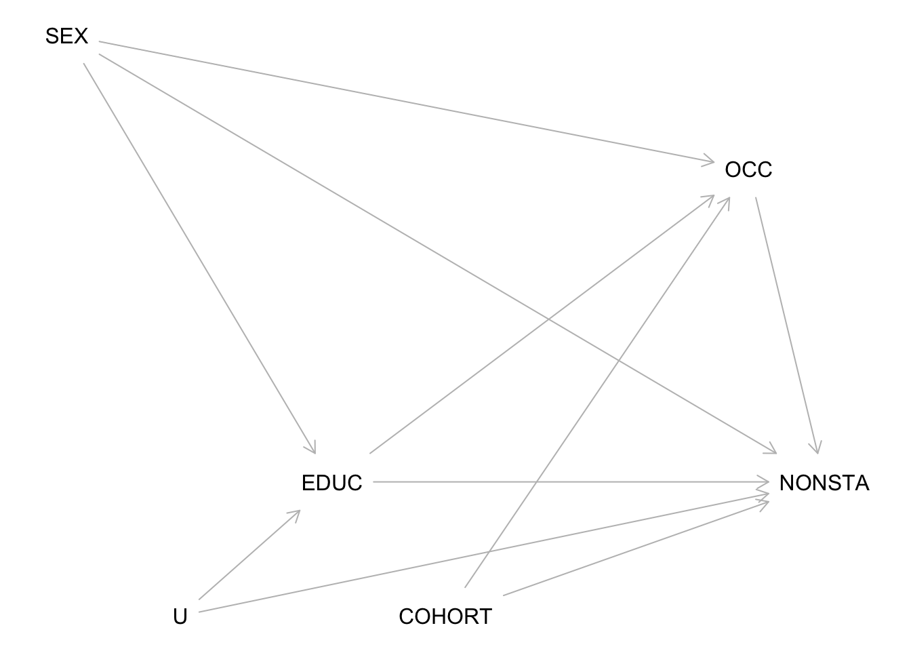
初職非正規雇用入職に対する学歴間格差
本研究の位置付け
- 課題公募型共同研究「社会調査データの合併による二次分析研究の刷新」でやろうとしている研究です．
- まだかなり粗い検討ですので，今後の方針について相談させていただければ幸いです．
- 夏の数理社会学会か秋頃の日本社会学会で報告し，査読論文にまとめられたらと思います．
- 博士論文とは別の内容です．
概要
- 初職非正規雇用への入職リスクに見られる学歴間格差の趨勢に関して，特に近年の高卒女性での初職非正規雇用リスク上昇に着目．
- それが，職業分布という構造的要因によって説明されるのか検討．
1. 背景と先行研究
1.1. 初職非正規雇用
- 本研究では，「初職」非正規雇用に着目
- 初職の非正規雇用は，その後のライフコースを強く規定
- 非正規→正規への世代内移動の障壁の高さ（中澤 2011; 労働政策研究・研修機構編 2014; 佐藤 2021）
- 初職非正規雇用への入職傾向に見られる格差は長期的に影響
- 初職非正規雇用リスクに見られる格差を検討することは肝要
1.2. 高卒女性の初職非正規リスク上昇
- 初職非正規雇用リスク
- 女性非正規雇用リスクの学歴間格差
- 1990年代半ば以降拡大（Sakaguchi 2018）
- 特に高卒女性において初職非正規雇用リスクが上昇（Sakaguchi 2018）
1.3. 職業構造による説明
- 高卒女性の非正規雇用増加の説明
- 高卒就職における性別職域分離と高卒女性の正規事務職の減少の影響（阪口 2021）
- “高卒女性がつきやすい職業において，初職非正規リスクが拡大したことが，高卒女性全体の初職非正規リスク上昇に寄与した”という説明
- 女性の職業分布の偏り（正規・非正規ともに）（三輪 2016）
- 特定職業における非正規リスクの上昇が，女性において特に強く全体の非正規リスクの上昇に影響することを示唆
まとめ
- 女性の初職非正規入職リスクは，男性以上に学歴による格差が存在．
- 高卒女性での初職非正規入職リスクの上昇がたびたび確認．
- それを説明するものとして，職業構造における性別分業の影響が指摘．
2. Research Question
- Research Gap
- 高卒女性の初職非正規リスクの増加が，いかなる構造的要因（職業分布）によって引き起こされているのか，明らかにされていない
- 阪口（2021）は職業の構造的要因に関する検討を行っているものの，「どの程度」構造的要因によって説明されるのか明らかにされていない
- 職業に層化した初職非正規リスクの違いから検討を行っており，職業の構造的要因（分布による影響）を峻別していない．（→現段階ではこの研究もこれを乗り越えられていません）
- 高卒女性の初職非正規リスクの増加が，いかなる構造的要因（職業分布）によって引き起こされているのか，明らかにされていない
Research Question
高卒女性の初職非正規雇用リスクの上昇は，職業分布の違いによってどの程度説明されるのか？（職業の構造的要因）
注
SEX：性別
U：関心のない交絡因子群
EDUC：学歴
COHORT：初職入職コーホート
OCC：初職職業
NONSTA：初職非正規雇用ダミー
3. 方法
3.1. データ
- SSM（SSM1985, SSM1995, SSM2005, SSM2015）
- JLPS（JLPS2007，JLPS2019）
3.2. 変数
- 従属変数｜非正規雇用ダミー
- 非正規雇用=1
- パート・アルバイト・契約・臨時・嘱託・派遣社員・請負社員
- 正規雇用=0
- 正社員・正職員
- 非正規雇用=1
- 説明変数｜最終学歴
- 高校(ref)・大学大学院
- 媒介変数｜初職職業
- 上層ホワイト(ref)・下層ホワイト・上層ブルー・下層ブルー
- 関心のある交絡変数（層化）
- 性別（男性・女性）
- 初職入職コーホート（1980-89年(ref)・1990-99年・2000-09年・2010-19年）
- 統制変数（U）
- 出身階層｜父親の職業（JSEI）（Fujihara 2020）
- 分析対象
- 1980年から2019年に初職として正規雇用あるいは非正規雇用に入職
- 初職入職時の年齢が，18歳から30歳まで
- 経営者・役員・自営業・自由業者・家族従業者・内職であるサンプルは分析から除外
- 欠損値処理
- 多重代入法による欠損値の補完
- FCSアルゴリズム
- 代入モデル
- 連続変数：線形回帰モデル
- 順序変数:順序ロジットモデル
- カテゴリ変数：多項ロジットモデル
- 繰り返し回数=100回，代入済みデータ数=100
- 推定された100個の分析モデルを，Rubinのルールに従って統合（Rubin 1987）
- 多重代入法による欠損値の補完
3.3. 分析戦略
初職非正規雇用入職を従属変数とする二項ロジットモデル
- データを性別で層化
- モデル1：関心のある交絡因子によって層化した上で観察される学歴効果
- モデル2：さらに関心のない交絡因子を考慮した上で観察される学歴効果
- モデル3：関心のある中間変数である職業のもたらす媒介効果を除いた上での学歴効果
- 全てのモデルで，右辺の変数間での交互作用効果を想定
\[ \begin{aligned} &\text{モデル1：} \log \left( \frac{P_i}{1-P_i} \right) = \alpha + \beta_1 EDUC_i + \beta_2 COHORT + \epsilon \\ &\text{モデル2：} \log \left( \frac{P_i}{1-P_i} \right) = model1 + \beta_4 Z_i \\ &\text{モデル3：} \log \left( \frac{P_i}{1-P_i} \right) = mdoel2 + \beta_5 OCC_i \end{aligned} \]
注
EDUC：最終学歴
COHORT：初職入職コーホート
OCC：初職職業
Z：統制変数（JSEI）
全てのモデルには各変数間の交互作用を全て含む
- 推定された二項ロジットモデルから予測確率を計算
KOB decomposition（Blinder-Oaxaca decomposition）
- 2値従属変数に対するKOB decomposition（Bauer and Sinning 2008; Yun 2004）
2値従属変数に対するKOB decomposition（Blinder-Oaxaca decompositio）
- ある2集団（AとB）の間に存在するアウトカムの格差を考える
- 今，グループAを参照集団とする
- 一般的なBlinder-oaxaca分解は，2つの集団間のアウトカムの差を以下のように分解（Blinder 1973）の集団間のアウトカムの差を以下のように分解（Blinder 1973）
\[ \bar{Y_A} - \bar{Y_B} = (\bar{X_A} - \bar{X_B}) \hat{\beta_A} + \bar{X_B}(\hat{\beta_A}-\hat{\beta_B}) \]
- 非線形の従属変数における分析の際には，条件付き期待値\(E(Y_{ig}|X_{ig})\)が，\(\bar{X_g}\hat{\beta_g}\)によって異なるため，異なる係数から推定される条件付き期待値を使用し，以下のように分解（Bauer and Sinning 2008）
\[ \bar{Y_A} - \bar{Y_B} = [E_{\beta_A} (Y_{iA}|X_{iA}) - E_{\beta_A} (Y_{iB}|X_{iB})] + [E_{\beta_A} (Y_{iB}|X_{iB}) - E_{\beta_B} (Y_{iB}|X_{iB})] \]
- KOB decomposition/Blinder-Oaxaca decompositionからは因果的解釈（Causal interpretation）ができないとの指摘も（Opacic et al. 2023）
- Generalized KOB decomposition/Descriptive decomposition(Opacic et al. 2023)
4. 記述統計
4.1. 対象となるデータ
- 1980年〜2019年までに初職に入職した者を対象に分析
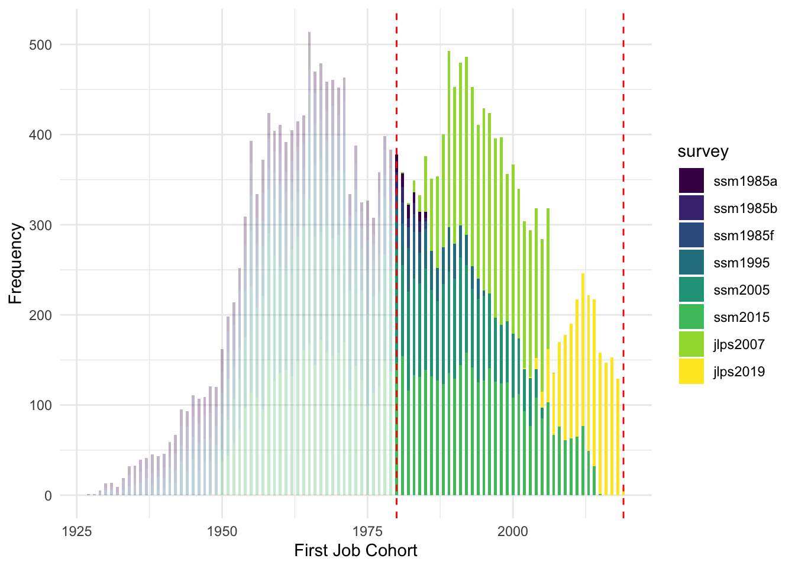
| データ | N | 備考 | ||
|---|---|---|---|---|
| 全データ | 27342 | 1.000 | ||
| 対象コーホート | 14894 | 0.545 | 1.00 | コーホートを限定 |
| 対象集団 | 8195 | 0.300 | 0.55 | 従業上の地位・学歴を限定 |
4.2. 分析データの記述統計
| N | % | ||||
|---|---|---|---|---|---|
| 男性 | 女性 | 男性 | 女性 | ||
| 調査 | jlps2007 | 1,240 | 965 | 0.290 | 0.247 |
| jlps2019 | 591 | 616 | 0.138 | 0.157 | |
| ssm1985a | 66 | 0 | 0.015 | 0.000 | |
| ssm1985b | 62 | 0 | 0.014 | 0.000 | |
| ssm1985f | 0 | 66 | 0.000 | 0.017 | |
| ssm1995 | 235 | 218 | 0.055 | 0.056 | |
| ssm2005 | 843 | 832 | 0.197 | 0.213 | |
| ssm2015 | 1,245 | 1,216 | 0.291 | 0.311 | |
| 初職入職コーホート | 1980-89 | 1,274 | 1,254 | 0.298 | 0.320 |
| 1990-99 | 1,506 | 1,200 | 0.352 | 0.307 | |
| 2000-09 | 919 | 833 | 0.215 | 0.213 | |
| 2010-19 | 583 | 626 | 0.136 | 0.160 | |
| 従業上の地位 | 正規雇用 | 3,725 | 3,106 | 0.870 | 0.794 |
| 非正規雇用 | 557 | 807 | 0.130 | 0.206 | |
| 学歴 | 高校 | 1,852 | 2,255 | 0.433 | 0.576 |
| 大学 | 2,430 | 1,658 | 0.567 | 0.424 | |
| 職業 | 上層ホワイト | 904 | 779 | 0.211 | 0.199 |
| 下層ホワイト | 1,731 | 2,418 | 0.404 | 0.618 | |
| 上層ブルー | 824 | 243 | 0.192 | 0.062 | |
| 下層ブルー | 666 | 351 | 0.156 | 0.090 | |
| NA | 157 | 122 | 0.037 | 0.031 | |
| 出身階層(JSEI) | Min. | 33.499 | 33.499 | ||
| Median | 47.847 | 47.847 | |||
| Mean | 49.897 | 49.408 | |||
| Max | 77.279 | 77.279 | |||
| S.D. | |||||
| NA | 754 | 734 | |||
| N | 4,282 | 4,282 | |||
| N | % | ||||
|---|---|---|---|---|---|
| 男性 | 女性 | 男性 | 女性 | ||
| 調査 | jlps2007 | 1,240 | 965 | 0.290 | 0.247 |
| jlps2019 | 591 | 616 | 0.138 | 0.157 | |
| ssm1985a | 66 | 0 | 0.015 | 0.000 | |
| ssm1985b | 62 | 0 | 0.014 | 0.000 | |
| ssm1985f | 0 | 66 | 0.000 | 0.017 | |
| ssm1995 | 235 | 218 | 0.055 | 0.056 | |
| ssm2005 | 843 | 832 | 0.197 | 0.213 | |
| ssm2015 | 1,245 | 1,216 | 0.291 | 0.311 | |
| 初職入職コーホート | 1980-89 | 1,274 | 1,254 | 0.298 | 0.320 |
| 1990-99 | 1,506 | 1,200 | 0.352 | 0.307 | |
| 2000-09 | 919 | 833 | 0.215 | 0.213 | |
| 2010-19 | 583 | 626 | 0.136 | 0.160 | |
| 従業上の地位 | 正規雇用 | 3,725 | 3,106 | 0.870 | 0.794 |
| 非正規雇用 | 557 | 807 | 0.130 | 0.206 | |
| 学歴 | 高校 | 1,852 | 2,255 | 0.433 | 0.576 |
| 大学 | 2,430 | 1,658 | 0.567 | 0.424 | |
| 職業 | 上層ホワイト | 927 | 804 | 0.216 | 0.205 |
| 下層ホワイト | 1,795 | 2,494 | 0.419 | 0.637 | |
| 上層ブルー | 865 | 253 | 0.202 | 0.065 | |
| 下層ブルー | 695 | 362 | 0.162 | 0.093 | |
| NA | 0 | 0 | 0.000 | 0.000 | |
| 出身階層(JSEI) | Min. | 19.116 | 21.126 | ||
| Median | 47.847 | 47.847 | |||
| Mean | 49.632 | 49.283 | |||
| Max | 78.853 | 83.189 | |||
| S.D. | 9.734 | 9.712 | |||
| NA | 0 | 0 | |||
| N | 4,282 | 4,282 | |||
5. 分析結果
5.1. 二項ロジットモデル（モデル1+2）
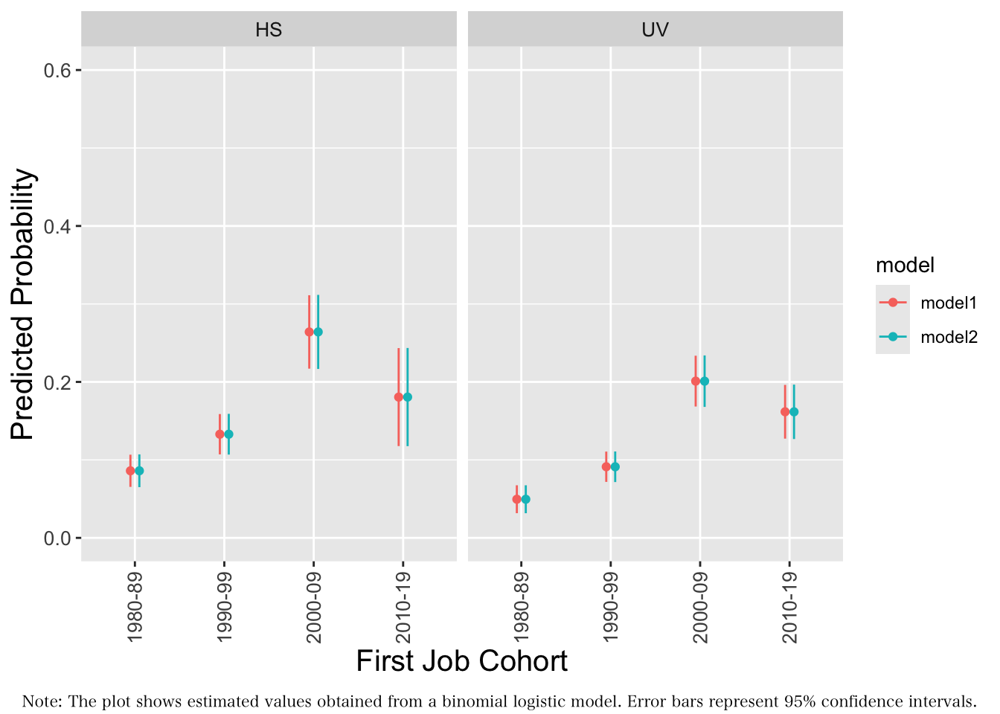
- 2000年以降，どの学歴層でもリスクは上昇
- リスク上昇は，高校>大学・大学院
- 2010年以降にはリスクが低下
- 先行研究の知見とほぼ合致
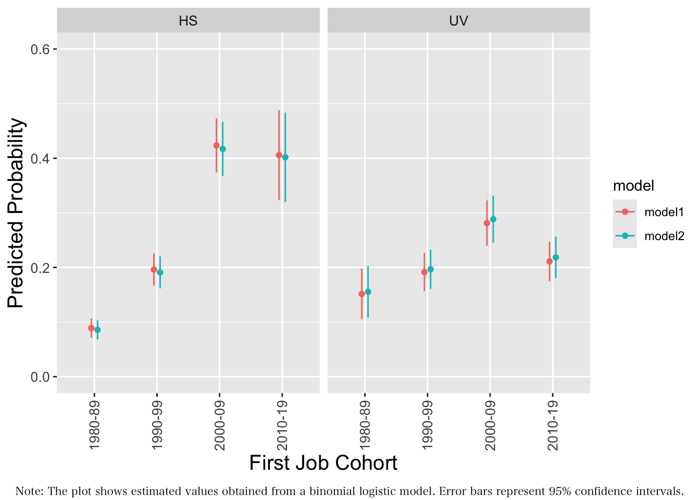
- 2000年以降，どの学歴層でも初職非正規リスクが上昇
- 上昇幅の学歴間格差は男性よりも顕著
- 「高校」のリスクが高い
- 「大学」のリスクの上昇幅は控えめ
- 「大学」のリスクは2010年以降に低下
- 「高校」のリスクは2010年以降も高い水準で維持
- 先行研究の知見とほぼ合致
5.2. 二項ロジットモデル（モデル3）
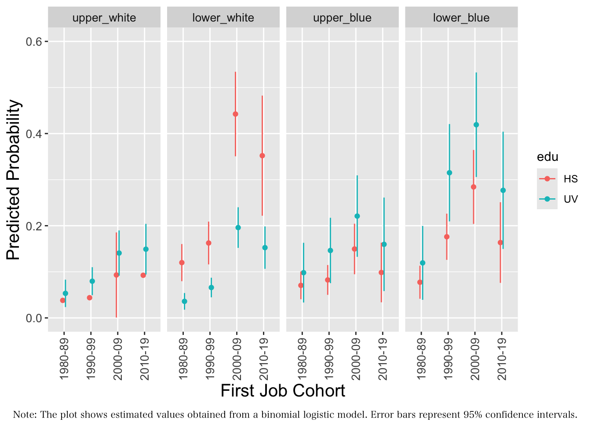
- 高卒の下層ホワイトで，2000年以降，初職非正規リスクが大幅に上昇
- それにより，下層ホワイト内での学歴間格差が拡大
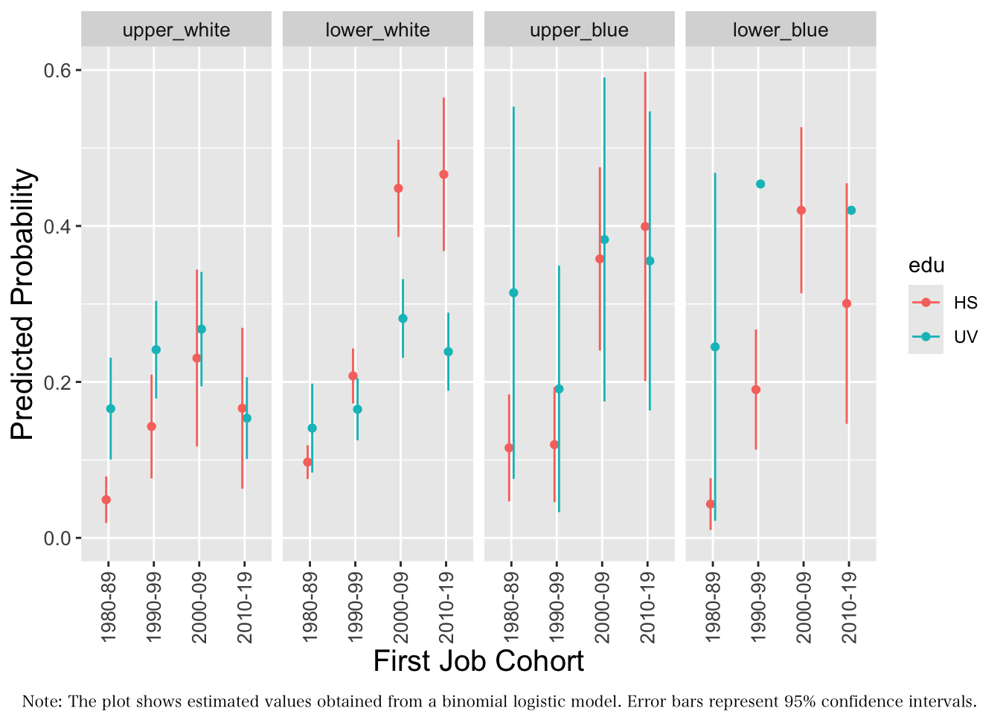
- 高卒の下層ホワイトで，2000年以降，初職非正規リスクが大幅に上昇
- それにより，下層ホワイト内での学歴間格差が拡大
5.3. KOB分解（generalized Blinder-Oaxaca 分解）
- Bauer and Sinning（2008）の方法
- 2値従属変数に対する KOB分解（generalized Blinder-Oaxaca 分解）
- 性別×初職入職コーホートで層化した上で各データに対して分析
- 出身階層を統制
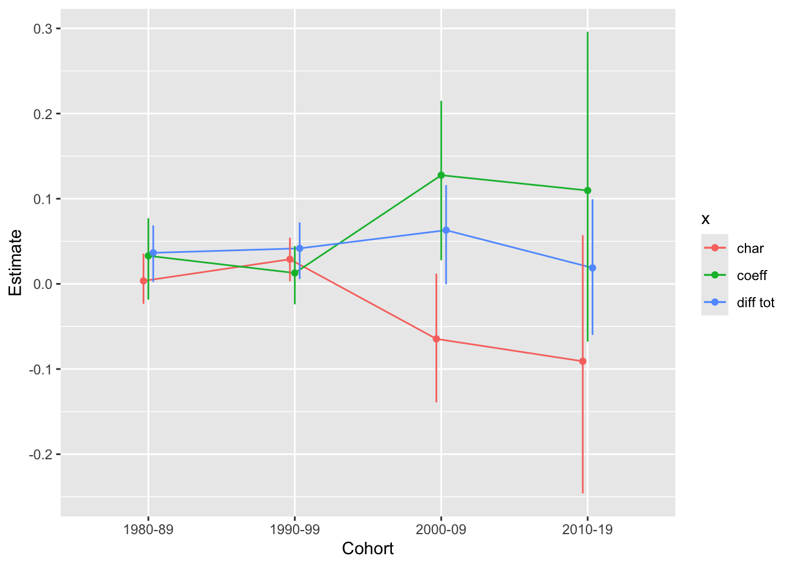
- 高卒と大卒間での初職非正規雇用リスクの格差（diff tot）は控えめ
- 要因分解
- 係数効果（coeff: 職業による影響）は格差を拡大させる効果
- 構成効果（char: 職業の分布による影響）は影響を持たない
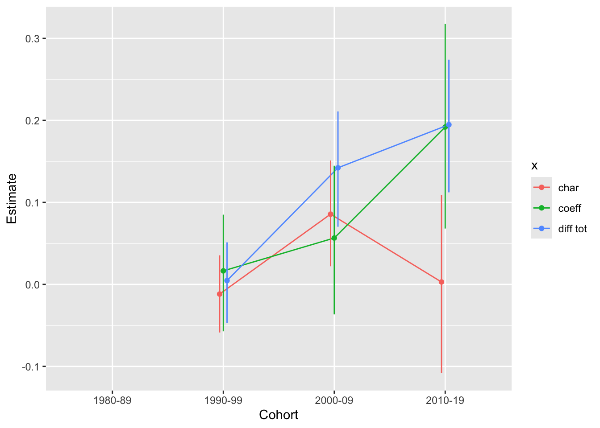
- 高卒と大卒間での初職非正規雇用リスクの格差（diff tot）は近年拡大
- 高卒で大卒よりもリスクが上昇することによる格差の拡大
- 要因分解
- 格差拡大のほとんどは，係数効果（coeff: 職業による影響）で説明される
- 構成効果（char: 職業の分布による影響）は2000年代に拡大後，縮小
- 2010年代の格差拡大のほとんどは係数効果によるもの
6. 議論
- 二項ロジットモデルの分析結果から
- モデル1,2からは，男性よりも女性で高校-大学間の格差が顕著であることを確認．
- モデル3からは，以下の点を確認
- 下層ホワイトでの初職非正規リスクの顕著な上昇およびそれによる学歴間格差の拡大は男女共通して確認．
- 上層ホワイト・上層ブルーでの初職非正規リスクは，女性で上昇，男性で低く推移
- KOB分解の分析結果から
- 男性では，目立った時代間での変化は確認されない
- 高卒学歴であることによる係数効果は若干の上昇傾向
- 女性では，時代による学歴間格差の拡大が，学歴の係数効果によってほぼ説明される
- 就職市場での高卒の不利が顕著になったことが，非正規雇用入職リスクを引き起こした可能性
- 職業分布の違いは，学歴間格差を拡大させた要因であるとは言えない
- 男性では，目立った時代間での変化は確認されない
7. 今後の方針
- 職業分布の影響（構成効果）と，学歴の係数効果の分解
- RIF回期？
- 方法の吟味，確認
- マイクロクラスレベルの細かな職業分類で検討
- 局所的な初職非正規リスクの高まりが全体のリスク上昇をもたらしている可能性
- 職業のみならず産業分類による検討
- サービス職などにおける性別分業と非正規割合の違いが，高卒女性の非正規リスクの上昇をもたらしている可能性
- 方法論的な瑣末なこと
- 交絡因子を検討し，モデルに追加
- JGSSデータを追加マージ（現在データ承認待ち）
謝辞
〔二次分析〕に当たり、東京大学社会科学研究所附属社会調査・データアーカイブ研究センターSSJデータアーカイブから〔「2015年SSM日本調査，2015」（2015SSM調査管理委員会）〕〔「2005年SSM日本調査，2005」（2015SSM調査管理委員会）〕〔「1995年SSM調査，1995」（2015SSM調査管理委員会）〕〔「1985年SSM調査，1985」（2015SSM調査管理委員会）〕の個票データの提供を受けました。
本研究は、日本学術振興会（JSPS）科学研究費補助金・特別推進研究（25000001,18H05204）、基盤研究（S）（18103003,22223005）の助成を受けたものである。東京大学社会科学研究所（東大社研）パネル調査の実施にあたっては、社会科学研究所研究資金、株式会社アウトソーシングからの奨学寄付金を受けた。パネル調査データの使用にあたっては東大社研パネル運営委員会の許可を受けた。
文献
- Bauer, T. and M. Sinning, An extension of the Blinder-Oaxaca decomposition to nonlinear models , 2008, Advances in Statistical Analysis, Springer-Verlag.
- Fujihara, Sho, 2020, “Socio-Economic Standing and Social Status in Contemporary Japan: Scale Constructions and Their Applications,” European Sociological Review, 36(4): 548–61.
- 本田由紀，2003，「若年労働市場における非典型雇用の拡大とその背景ーーJGSS2000とJGSS2001の統合データを用いて」『JGSS研究論文集2』: 47-59．
- 石田浩，2005，「後期青年期と階層・労働市場」『教育社会学研究』76: 41-57．
- 三輪哲，2016，「非典型雇用者の階層構成と社会移動の趨勢」『日本労働研究雑誌』672: 14-28．
- 中澤渉，2011，「分断化される若年労働市場」佐藤嘉倫・尾嶋史章編『現代の階層社会１ 格差と多様性』東京大学出版会，51-64．
- Opacic, Aleksei, Lai Wei and Xiang Zhou, 2023, “Disparity Analysis: A Tale of Two Approaches.”
- 労働政策研究・研修機構編，2014，『壮年非正規雇用労働者の仕事と生活に関する研究ーー現状分析を中心として』労働政策研究報告書No.164．
- Rubin, B. Donald, 1987, Multiple Imputation for Nonresponse in Surveys, New York: Wiley.
- Sakaguchi, Yusuke, 2018, “Whose Risk of Non-Regular Employment an Labor Market Entry Has Increased in Japan?”, 阪口祐介編『2015年SSM調査報告書6 労働市場』2015年SSM調査研究会，83-102．
- 阪口祐介，2021，「なぜ高卒女性で初職非正規雇用リスクは高まったのか」中村高康・三輪哲・石田浩編『少子高齢社会の階層構造1 人生初期の階層構造』東京大学出版会．
- 佐藤嘉倫，2021,「非正規雇用から正規雇用への移動障壁の時代的変遷：縮小する中核と拡大する周辺」渡邉勉・吉川徹・佐藤嘉倫編『シリーズ 少子高齢社会の階層構造2 人生中期の階層構造』東京大学出版会, 35-51．
- Yun,M.S, 2004, “Decomposing Differences in the First Moment,” Economics Letters,82(2): 275-80.
Appendix
二項ロジットモデル結果詳細
推定値
プロット
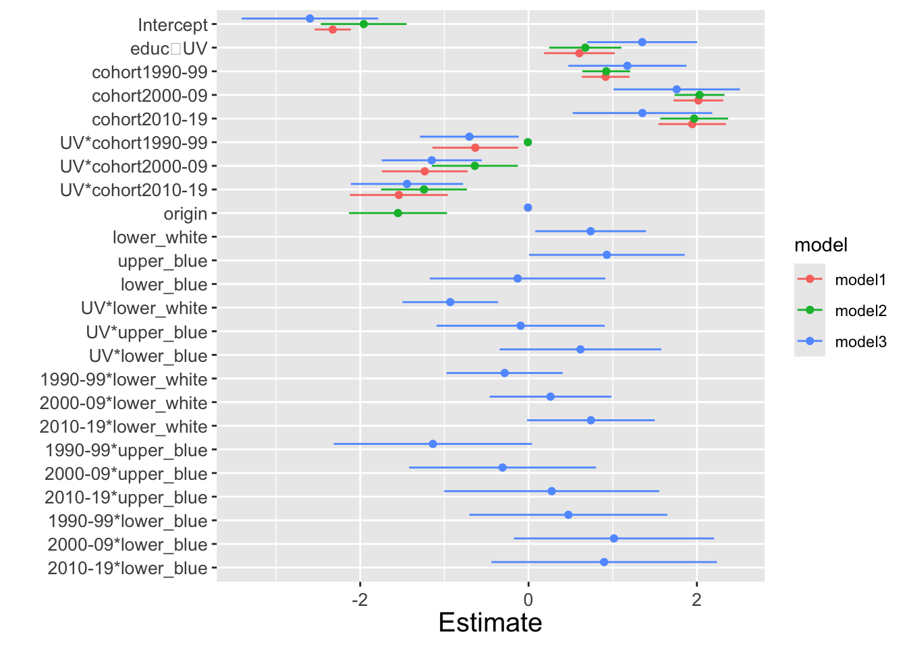
表
| var | model1 | model2 | model3 | ||||||
|---|---|---|---|---|---|---|---|---|---|
| Est. | S.E. | Est. | S.E. | Est. | S.E. | ||||
| Intercept | -2.363 | 0.134 | *** | -2.367 | 0.290 | *** | -3.291 | 0.642 | *** |
| educ：UV | -0.591 | 0.236 | * | -0.591 | 0.239 | * | 0.357 | 0.572 | |
| cohort1990-99 | 0.488 | 0.176 | ** | 0.488 | 0.176 | ** | 0.145 | 0.482 | |
| cohort2000-09 | 1.338 | 0.182 | *** | 1.338 | 0.183 | *** | 0.951 | 0.478 | * |
| cohort2010-19 | 0.850 | 0.255 | *** | 0.850 | 0.255 | *** | 0.944 | 0.535 | |
| UV*cohort1990-99 | 0.167 | 0.288 | 0.000 | 0.006 | 0.286 | 0.339 | |||
| UV*cohort2000-09 | 0.236 | 0.285 | 0.167 | 0.288 | 0.118 | 0.335 | |||
| UV*cohort2010-19 | 0.458 | 0.345 | 0.236 | 0.285 | 0.193 | 0.402 | |||
| origin | 0.458 | 0.345 | 0.001 | 0.006 | |||||
| lower_white | 1.243 | 0.593 | * | ||||||
| upper_blue | 0.657 | 0.618 | |||||||
| lower_blue | 0.757 | 0.627 | |||||||
| UV*lower_white | -1.654 | 0.559 | ** | ||||||
| UV*upper_blue | 0.003 | 0.593 | |||||||
| UV*lower_blue | 0.123 | 0.582 | |||||||
| 1990-99*lower_white | 0.208 | 0.469 | |||||||
| 2000-09*lower_white | 0.810 | 0.460 | |||||||
| 2010-19*lower_white | 0.439 | 0.486 | |||||||
| 1990-99*upper_blue | 0.023 | 0.537 | |||||||
| 2000-09*upper_blue | -0.111 | 0.531 | |||||||
| 2010-19*upper_blue | -0.583 | 0.624 | |||||||
| 1990-99*lower_blue | 0.791 | 0.537 | |||||||
| 2000-09*lower_blue | 0.604 | 0.536 | |||||||
| 2010-19*lower_blue | -0.099 | 0.600 | |||||||
| var | model1 | model2 | model3 | ||||||
|---|---|---|---|---|---|---|---|---|---|
| Est. | S.E. | Est. | S.E. | Est. | S.E. | ||||
| Intercept | -2.326 | 0.110 | *** | -1.958 | 0.260 | *** | -2.597 | 0.414 | *** |
| educ：UV | 0.604 | 0.214 | ** | 0.674 | 0.219 | ** | 1.350 | 0.333 | *** |
| cohort1990-99 | 0.915 | 0.145 | *** | 0.923 | 0.145 | *** | 1.174 | 0.358 | ** |
| cohort2000-09 | 2.018 | 0.151 | *** | 2.031 | 0.151 | *** | 1.760 | 0.383 | *** |
| cohort2010-19 | 1.945 | 0.205 | *** | 1.968 | 0.206 | *** | 1.353 | 0.423 | ** |
| UV*cohort1990-99 | -0.633 | 0.260 | * | -0.008 | 0.005 | -0.703 | 0.299 | * | |
| UV*cohort2000-09 | -1.233 | 0.260 | *** | -0.638 | 0.261 | * | -1.150 | 0.303 | *** |
| UV*cohort2010-19 | -1.541 | 0.297 | *** | -1.242 | 0.260 | *** | -1.444 | 0.340 | *** |
| origin | -1.551 | 0.297 | *** | -0.007 | 0.005 | ||||
| lower_white | 0.738 | 0.336 | * | ||||||
| upper_blue | 0.930 | 0.472 | * | ||||||
| lower_blue | -0.130 | 0.532 | |||||||
| UV*lower_white | -0.930 | 0.290 | ** | ||||||
| UV*upper_blue | -0.094 | 0.510 | |||||||
| UV*lower_blue | 0.617 | 0.490 | |||||||
| 1990-99*lower_white | -0.284 | 0.352 | |||||||
| 2000-09*lower_white | 0.261 | 0.369 | |||||||
| 2010-19*lower_white | 0.741 | 0.387 | |||||||
| 1990-99*upper_blue | -1.136 | 0.601 | |||||||
| 2000-09*upper_blue | -0.309 | 0.566 | |||||||
| 2010-19*upper_blue | 0.275 | 0.652 | |||||||
| 1990-99*lower_blue | 0.473 | 0.600 | |||||||
| 2000-09*lower_blue | 1.015 | 0.607 | |||||||
| 2010-19*lower_blue | 0.898 | 0.683 | |||||||
リストワイズ欠損処理をした場合との比較
男性
| var | Imputated | Listwise | ||||
|---|---|---|---|---|---|---|
| Est. | S.E. | Est. | S.E. | |||
| Intercept | −2.363 | 0.134 | *** | −2.439 | 0.155 | *** |
| educ：UV | −0.591 | 0.236 | * | −0.561 | 0.264 | * |
| cohort1990-99 | 0.488 | 0.176 | ** | 0.409 | 0.210 | |
| cohort2000-09 | 1.338 | 0.182 | *** | 1.416 | 0.216 | *** |
| cohort2010-19 | 0.850 | 0.255 | *** | 1.022 | 0.319 | ** |
| UV*cohort1990-99 | 0.167 | 0.288 | 0.154 | 0.329 | ||
| UV*cohort2000-09 | 0.236 | 0.285 | 0.184 | 0.326 | ||
| UV*cohort2010-19 | 0.458 | 0.345 | 0.284 | 0.414 | ||
| var | Imputated | Listwise | ||||
|---|---|---|---|---|---|---|
| Est. | S.E. | Est. | S.E. | |||
| Intercept | −2.367 | 0.290 | *** | −2.565 | 0.313 | *** |
| educ：UV | −0.591 | 0.239 | * | −0.580 | 0.268 | * |
| cohort1990-99 | 0.488 | 0.176 | ** | 0.404 | 0.210 | |
| cohort2000-09 | 1.338 | 0.183 | *** | 1.411 | 0.217 | *** |
| cohort2010-19 | 0.850 | 0.255 | *** | 1.015 | 0.319 | ** |
| UV*cohort1990-99 | 0.000 | 0.006 | 0.156 | 0.329 | ||
| UV*cohort2000-09 | 0.167 | 0.288 | 0.185 | 0.326 | ||
| UV*cohort2010-19 | 0.236 | 0.285 | 0.285 | 0.414 | ||
| origin | 0.458 | 0.345 | 0.003 | 0.006 | ||
| var | Imputated | Listwise | ||||
|---|---|---|---|---|---|---|
| Est. | S.E. | Est. | S.E. | |||
| Intercept | −3.291 | 0.642 | *** | −3.545 | 0.733 | *** |
| educ：UV | 0.357 | 0.572 | 0.390 | 0.659 | ||
| cohort1990-99 | 0.145 | 0.482 | 0.160 | 0.542 | ||
| cohort2000-09 | 0.951 | 0.478 | * | 1.254 | 0.528 | * |
| cohort2010-19 | 0.944 | 0.535 | 1.166 | 0.618 | ||
| UV*cohort1990-99 | 0.286 | 0.339 | 0.255 | 0.393 | ||
| UV*cohort2000-09 | 0.118 | 0.335 | −0.001 | 0.382 | ||
| UV*cohort2010-19 | 0.193 | 0.402 | 0.088 | 0.481 | ||
| origin | 0.001 | 0.006 | 0.004 | 0.006 | ||
| lower_white | 1.243 | 0.593 | * | 1.280 | 0.680 | |
| upper_blue | 0.657 | 0.618 | 0.819 | 0.708 | ||
| lower_blue | 0.757 | 0.627 | 0.660 | 0.731 | ||
| UV*lower_white | −1.654 | 0.559 | ** | −1.585 | 0.646 | * |
| UV*upper_blue | 0.003 | 0.593 | −0.122 | 0.693 | ||
| UV*lower_blue | 0.123 | 0.582 | 0.079 | 0.673 | ||
| 1990-99*lower_white | 0.208 | 0.469 | −0.022 | 0.517 | ||
| 2000-09*lower_white | 0.810 | 0.460 | 0.520 | 0.497 | ||
| 2010-19*lower_white | 0.439 | 0.486 | 0.140 | 0.538 | ||
| 1990-99*upper_blue | 0.023 | 0.537 | −0.292 | 0.611 | ||
| 2000-09*upper_blue | −0.111 | 0.531 | −0.541 | 0.592 | ||
| 2010-19*upper_blue | −0.583 | 0.624 | −0.892 | 0.717 | ||
| 1990-99*lower_blue | 0.791 | 0.537 | 1.004 | 0.616 | ||
| 2000-09*lower_blue | 0.604 | 0.536 | 0.627 | 0.613 | ||
| 2010-19*lower_blue | −0.099 | 0.600 | 0.202 | 0.698 | ||
女性
| var | Imputated | Listwise | ||||
|---|---|---|---|---|---|---|
| Est. | S.E. | Est. | S.E. | |||
| Intercept | −2.326 | 0.110 | *** | −2.474 | 0.132 | *** |
| educ：UV | 0.604 | 0.214 | ** | 0.877 | 0.232 | *** |
| cohort1990-99 | 0.915 | 0.145 | *** | 1.090 | 0.171 | *** |
| cohort2000-09 | 2.018 | 0.151 | *** | 2.191 | 0.187 | *** |
| cohort2010-19 | 1.945 | 0.205 | *** | 1.914 | 0.271 | *** |
| UV*cohort1990-99 | −0.633 | 0.260 | * | −0.885 | 0.285 | ** |
| UV*cohort2000-09 | −1.233 | 0.260 | *** | −1.598 | 0.292 | *** |
| UV*cohort2010-19 | −1.541 | 0.297 | *** | −1.707 | 0.358 | *** |
| var | Imputated | Listwise | ||||
|---|---|---|---|---|---|---|
| Est. | S.E. | Est. | S.E. | |||
| Intercept | −1.958 | 0.260 | *** | −2.027 | 0.276 | *** |
| educ：UV | 0.674 | 0.219 | ** | 0.963 | 0.237 | *** |
| cohort1990-99 | 0.923 | 0.145 | *** | 1.102 | 0.171 | *** |
| cohort2000-09 | 2.031 | 0.151 | *** | 2.211 | 0.187 | *** |
| cohort2010-19 | 1.968 | 0.206 | *** | 1.947 | 0.272 | *** |
| UV*cohort1990-99 | −0.008 | 0.005 | −0.892 | 0.285 | ** | |
| UV*cohort2000-09 | −0.638 | 0.261 | * | −1.612 | 0.293 | *** |
| UV*cohort2010-19 | −1.242 | 0.260 | *** | −1.724 | 0.358 | *** |
| origin | −1.551 | 0.297 | *** | −0.010 | 0.005 | |
| var | Imputated | Listwise | ||||
|---|---|---|---|---|---|---|
| Est. | S.E. | Est. | S.E. | |||
| Intercept | −2.597 | 0.414 | *** | −2.509 | 0.434 | *** |
| educ：UV | 1.350 | 0.333 | *** | 1.560 | 0.359 | *** |
| cohort1990-99 | 1.174 | 0.358 | ** | 1.136 | 0.382 | ** |
| cohort2000-09 | 1.760 | 0.383 | *** | 1.793 | 0.420 | *** |
| cohort2010-19 | 1.353 | 0.423 | ** | 1.291 | 0.483 | ** |
| UV*cohort1990-99 | −0.703 | 0.299 | * | −0.859 | 0.328 | ** |
| UV*cohort2000-09 | −1.150 | 0.303 | *** | −1.472 | 0.342 | *** |
| UV*cohort2010-19 | −1.444 | 0.340 | *** | −1.554 | 0.402 | *** |
| origin | −0.007 | 0.005 | −0.009 | 0.006 | ||
| lower_white | 0.738 | 0.336 | * | 0.555 | 0.360 | |
| upper_blue | 0.930 | 0.472 | * | 0.491 | 0.555 | |
| lower_blue | −0.130 | 0.532 | 0.025 | 0.549 | ||
| UV*lower_white | −0.930 | 0.290 | ** | −0.952 | 0.314 | ** |
| UV*upper_blue | −0.094 | 0.510 | 0.059 | 0.566 | ||
| UV*lower_blue | 0.617 | 0.490 | 0.590 | 0.599 | ||
| 1990-99*lower_white | −0.284 | 0.352 | −0.025 | 0.373 | ||
| 2000-09*lower_white | 0.261 | 0.369 | 0.486 | 0.398 | ||
| 2010-19*lower_white | 0.741 | 0.387 | 0.750 | 0.428 | ||
| 1990-99*upper_blue | −1.136 | 0.601 | −0.640 | 0.679 | ||
| 2000-09*upper_blue | −0.309 | 0.566 | 0.033 | 0.661 | ||
| 2010-19*upper_blue | 0.275 | 0.652 | 0.744 | 0.787 | ||
| 1990-99*lower_blue | 0.473 | 0.600 | 0.300 | 0.639 | ||
| 2000-09*lower_blue | 1.015 | 0.607 | 0.725 | 0.653 | ||
| 2010-19*lower_blue | 0.898 | 0.683 | 0.626 | 0.799 | ||
Generalized Blinder-Oaxaca 分解の結果詳細
| cohort | estimate | 95%CI | ||
|---|---|---|---|---|
| lower | upper | |||
| 1980-89 | char | 0.004 | −0.023 | 0.036 |
| 1980-89 | coeff | 0.033 | −0.018 | 0.077 |
| 1980-89 | diff tot | 0.036 | 0.002 | 0.069 |
| 1990-99 | char | 0.029 | 0.003 | 0.054 |
| 1990-99 | coeff | 0.013 | −0.024 | 0.044 |
| 1990-99 | diff tot | 0.042 | 0.006 | 0.072 |
| 2000-09 | char | −0.065 | −0.139 | 0.012 |
| 2000-09 | coeff | 0.128 | 0.028 | 0.215 |
| 2000-09 | diff tot | 0.063 | 0.000 | 0.116 |
| 2010-19 | char | −0.091 | −0.246 | 0.057 |
| 2010-19 | coeff | 0.110 | −0.068 | 0.296 |
| 2010-19 | diff tot | 0.019 | −0.060 | 0.099 |
| cohort | estimate | 95%CI | ||
|---|---|---|---|---|
| lower | upper | |||
| 1990-99 | char | −0.012 | −0.059 | 0.035 |
| 1990-99 | coeff | 0.016 | −0.057 | 0.085 |
| 1990-99 | diff tot | 0.005 | −0.047 | 0.051 |
| 2000-09 | char | 0.086 | 0.022 | 0.151 |
| 2000-09 | coeff | 0.057 | −0.037 | 0.145 |
| 2000-09 | diff tot | 0.142 | 0.070 | 0.211 |
| 2010-19 | char | 0.003 | −0.108 | 0.109 |
| 2010-19 | coeff | 0.192 | 0.068 | 0.318 |
| 2010-19 | diff tot | 0.195 | 0.112 | 0.274 |
多重代入法の回帰診断
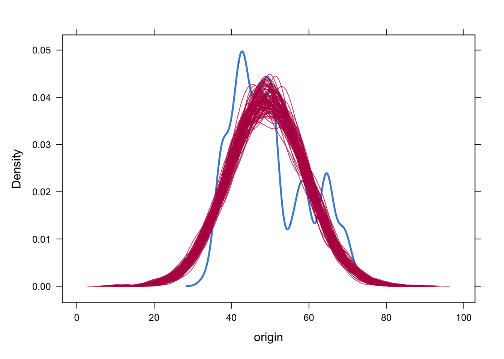
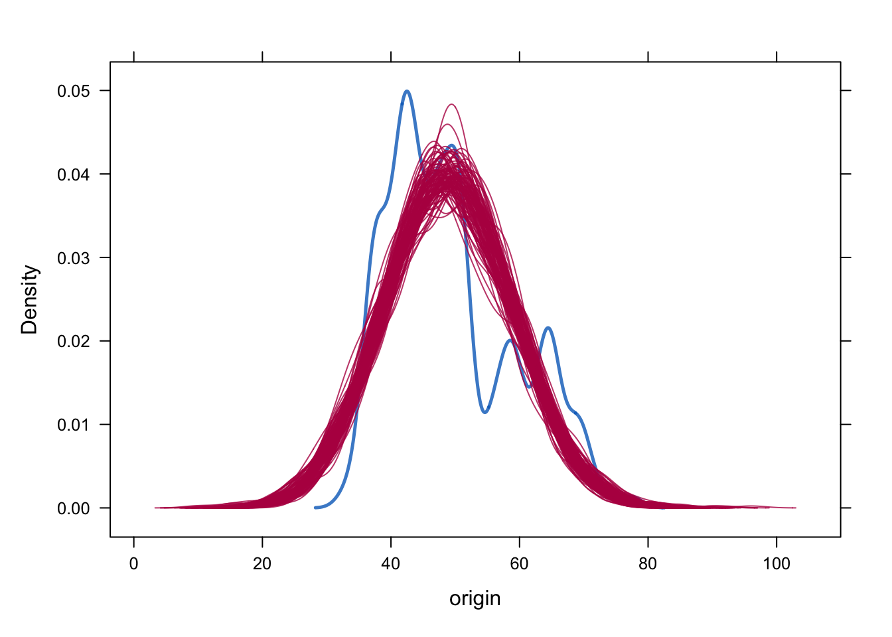